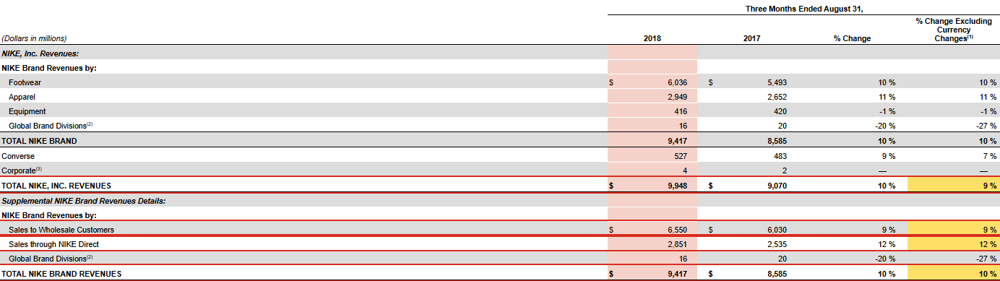
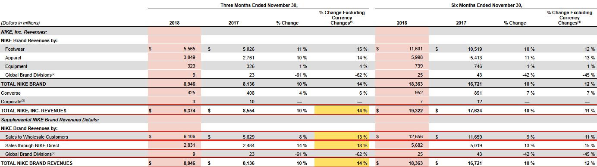
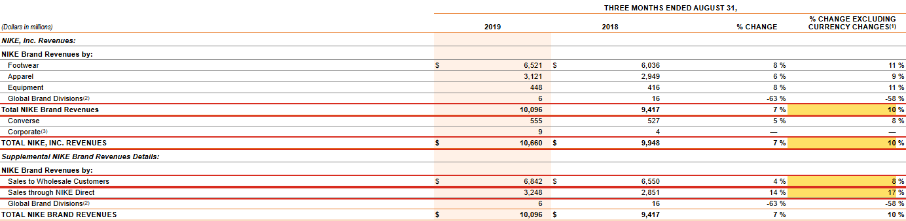
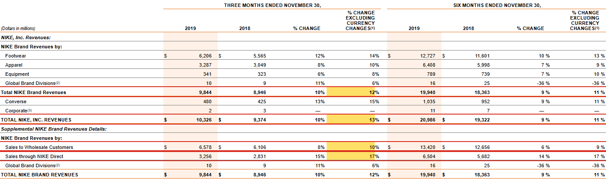
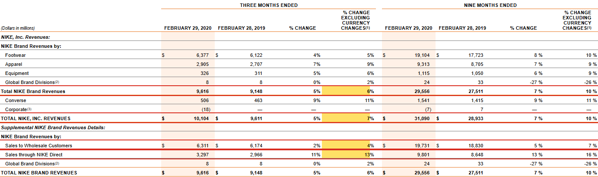
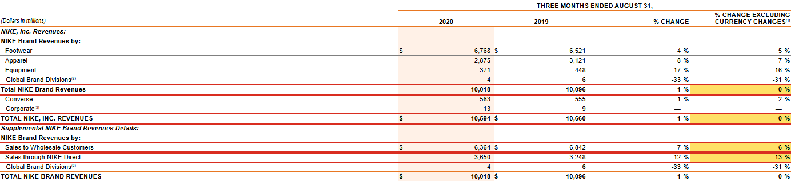
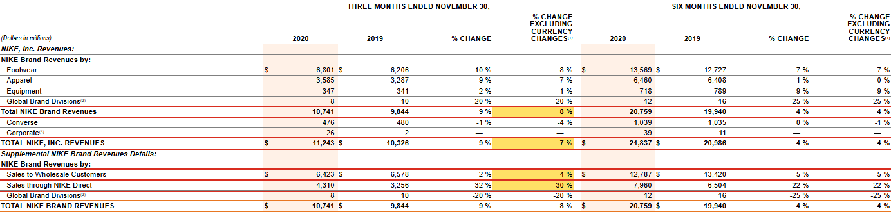
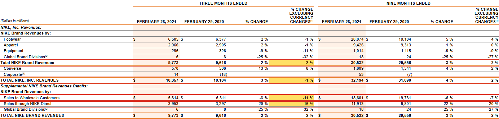

36/36 số khớp. Kiểm tra ngày 25/10/2026.
Vì sao đọc lại: các tỷ lệ này không có thẻ XBRL và báo cáo năm sau không in lại. Trong cùng 10-Q, NIKE in lại tỷ lệ của NIKE, Inc. và NIKE Brand ở bảng doanh thu theo khu vực, tỷ lệ của NIKE Direct trong một câu ở phần thảo luận của ban điều hành (MD&A); riêng tỷ lệ bán buôn chỉ in một lần. Vì vậy nhóm đọc lại cả 36 số ngay trên trang báo cáo quý.
Cách đọc ảnh: số lấy ở cột “% CHANGE EXCLUDING CURRENCY CHANGES” ở phần 3 tháng (Three Months Ended). Báo cáo quý 2 và quý 3 có thêm một cột cùng tên cho 6 hoặc 9 tháng; cột đó không dùng. Ô chứa số cần đọc tô vàng, cả dòng có khung đỏ.
Ảnh chụp từ bản báo cáo tải về từ trang nhà đầu tư của NIKE (Investor Relations), cùng số hồ sơ và nội dung với bản trên SEC EDGAR (liên kết SEC ở từng quý).
Mở NIKE, Inc. Form 10-Q for the quarterly period ended August 31, 2018 trên SEC EDGAR
| Chỉ tiêu | Trang | Số trong bộ dữ liệu | Đọc lại trên trang | In lại trong cùng 10-Q | Kết quả |
|---|---|---|---|---|---|
| % thay đổi doanh thu NIKE, Inc. loại trừ tỷ giá | 22 | +9% | +9% | +9% (bảng doanh thu theo khu vực, tr. 25) | Khớp |
| % thay đổi NIKE Brand loại trừ tỷ giá | 22 | +10% | +10% | +10% (bảng doanh thu theo khu vực, tr. 25) | Khớp |
| % thay đổi NIKE Direct loại trừ tỷ giá | 22 | +12% | +12% | +12% (câu trong MD&A, tr. 23) | Khớp |
| % thay đổi bán buôn loại trừ tỷ giá | 22 | +9% | +9% | Không in lại | Khớp |

Mở NIKE, Inc. Form 10-Q for the quarterly period ended November 30, 2018 trên SEC EDGAR
| Chỉ tiêu | Trang | Số trong bộ dữ liệu | Đọc lại trên trang | In lại trong cùng 10-Q | Kết quả |
|---|---|---|---|---|---|
| % thay đổi doanh thu NIKE, Inc. loại trừ tỷ giá | 27 | +14% | +14% | +14% (bảng doanh thu theo khu vực, tr. 30) | Khớp |
| % thay đổi NIKE Brand loại trừ tỷ giá | 27 | +14% | +14% | +14% (bảng doanh thu theo khu vực, tr. 30) | Khớp |
| % thay đổi NIKE Direct loại trừ tỷ giá | 27 | +18% | +18% | +18% (câu trong MD&A, tr. 27) | Khớp |
| % thay đổi bán buôn loại trừ tỷ giá | 27 | +13% | +13% | Không in lại | Khớp |

Mở NIKE, Inc. Form 10-Q for the quarterly period ended February 28, 2019 trên SEC EDGAR
| Chỉ tiêu | Trang | Số trong bộ dữ liệu | Đọc lại trên trang | In lại trong cùng 10-Q | Kết quả |
|---|---|---|---|---|---|
| % thay đổi doanh thu NIKE, Inc. loại trừ tỷ giá | 27 | +11% | +11% | +11% (bảng doanh thu theo khu vực, tr. 30) | Khớp |
| % thay đổi NIKE Brand loại trừ tỷ giá | 27 | +12% | +12% | +12% (bảng doanh thu theo khu vực, tr. 30) | Khớp |
| % thay đổi NIKE Direct loại trừ tỷ giá | 27 | +17% | +17% | +17% (câu trong MD&A, tr. 27) | Khớp |
| % thay đổi bán buôn loại trừ tỷ giá | 27 | +10% | +10% | Không in lại | Khớp |
Mở NIKE, Inc. Form 10-Q for the quarterly period ended August 31, 2019 trên SEC EDGAR
| Chỉ tiêu | Trang | Số trong bộ dữ liệu | Đọc lại trên trang | In lại trong cùng 10-Q | Kết quả |
|---|---|---|---|---|---|
| % thay đổi doanh thu NIKE, Inc. loại trừ tỷ giá | 24 | +10% | +10% | +10% (bảng doanh thu theo khu vực, tr. 26) | Khớp |
| % thay đổi NIKE Brand loại trừ tỷ giá | 24 | +10% | +10% | +10% (bảng doanh thu theo khu vực, tr. 26) | Khớp |
| % thay đổi NIKE Direct loại trừ tỷ giá | 24 | +17% | +17% | +17% (câu trong MD&A, tr. 24) | Khớp |
| % thay đổi bán buôn loại trừ tỷ giá | 24 | +8% | +8% | Không in lại | Khớp |

Mở NIKE, Inc. Form 10-Q for the quarterly period ended November 30, 2019 trên SEC EDGAR
| Chỉ tiêu | Trang | Số trong bộ dữ liệu | Đọc lại trên trang | In lại trong cùng 10-Q | Kết quả |
|---|---|---|---|---|---|
| % thay đổi doanh thu NIKE, Inc. loại trừ tỷ giá | 28 | +13% | +13% | +13% (bảng doanh thu theo khu vực, tr. 31) | Khớp |
| % thay đổi NIKE Brand loại trừ tỷ giá | 28 | +12% | +12% | +12% (bảng doanh thu theo khu vực, tr. 31) | Khớp |
| % thay đổi NIKE Direct loại trừ tỷ giá | 28 | +17% | +17% | +17% (câu trong MD&A, tr. 28) | Khớp |
| % thay đổi bán buôn loại trừ tỷ giá | 28 | +10% | +10% | Không in lại | Khớp |

Mở NIKE, Inc. Form 10-Q for the quarterly period ended February 29, 2020 trên SEC EDGAR
| Chỉ tiêu | Trang | Số trong bộ dữ liệu | Đọc lại trên trang | In lại trong cùng 10-Q | Kết quả |
|---|---|---|---|---|---|
| % thay đổi doanh thu NIKE, Inc. loại trừ tỷ giá | 31 | +7% | +7% | +7% (bảng doanh thu theo khu vực, tr. 35) | Khớp |
| % thay đổi NIKE Brand loại trừ tỷ giá | 31 | +6% | +6% | +6% (bảng doanh thu theo khu vực, tr. 35) | Khớp |
| % thay đổi NIKE Direct loại trừ tỷ giá | 31 | +13% | +13% | +13% (câu trong MD&A, tr. 31) | Khớp |
| % thay đổi bán buôn loại trừ tỷ giá | 31 | +4% | +4% | Không in lại | Khớp |

Mở NIKE, Inc. Form 10-Q for the quarterly period ended August 31, 2020 trên SEC EDGAR
| Chỉ tiêu | Trang | Số trong bộ dữ liệu | Đọc lại trên trang | In lại trong cùng 10-Q | Kết quả |
|---|---|---|---|---|---|
| % thay đổi doanh thu NIKE, Inc. loại trừ tỷ giá | 24 | 0% | 0% | 0% (bảng doanh thu theo khu vực, tr. 27) | Khớp |
| % thay đổi NIKE Brand loại trừ tỷ giá | 24 | 0% | 0% | 0% (bảng doanh thu theo khu vực, tr. 27) | Khớp |
| % thay đổi NIKE Direct loại trừ tỷ giá | 24 | +13% | +13% | +13% (câu trong MD&A, tr. 24) | Khớp |
| % thay đổi bán buôn loại trừ tỷ giá | 24 | −6% | −6% | Không in lại | Khớp |

Mở NIKE, Inc. Form 10-Q for the quarterly period ended November 30, 2020 trên SEC EDGAR
| Chỉ tiêu | Trang | Số trong bộ dữ liệu | Đọc lại trên trang | In lại trong cùng 10-Q | Kết quả |
|---|---|---|---|---|---|
| % thay đổi doanh thu NIKE, Inc. loại trừ tỷ giá | 28 | +7% | +7% | +7% (bảng doanh thu theo khu vực, tr. 32) | Khớp |
| % thay đổi NIKE Brand loại trừ tỷ giá | 28 | +8% | +8% | +8% (bảng doanh thu theo khu vực, tr. 32) | Khớp |
| % thay đổi NIKE Direct loại trừ tỷ giá | 28 | +30% | +30% | +30% (câu trong MD&A, tr. 28) | Khớp |
| % thay đổi bán buôn loại trừ tỷ giá | 28 | −4% | −4% | Không in lại | Khớp |

Mở NIKE, Inc. Form 10-Q for the quarterly period ended February 28, 2021 trên SEC EDGAR
| Chỉ tiêu | Trang | Số trong bộ dữ liệu | Đọc lại trên trang | In lại trong cùng 10-Q | Kết quả |
|---|---|---|---|---|---|
| % thay đổi doanh thu NIKE, Inc. loại trừ tỷ giá | 28 | −1% | −1% | −1% (bảng doanh thu theo khu vực, tr. 32) | Khớp |
| % thay đổi NIKE Brand loại trừ tỷ giá | 28 | −2% | −2% | −2% (bảng doanh thu theo khu vực, tr. 32) | Khớp |
| % thay đổi NIKE Direct loại trừ tỷ giá | 28 | +16% | +16% | +16% (câu trong MD&A, tr. 28) | Khớp |
| % thay đổi bán buôn loại trừ tỷ giá | 28 | −11% | −11% | Không in lại | Khớp |
